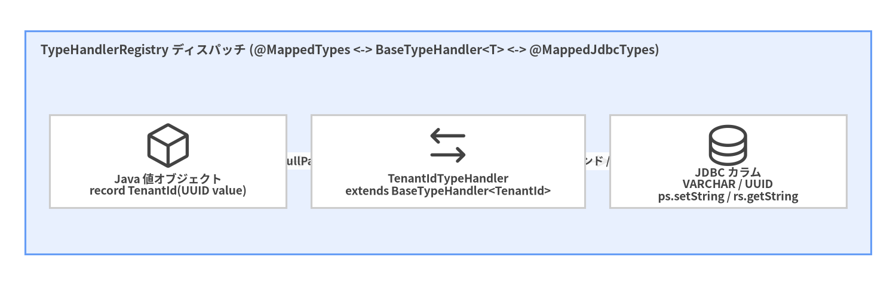
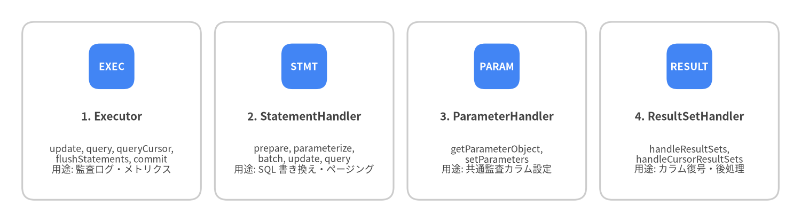

8. TypeHandler・プラグイン・テスト
MyBatis は、ドメイン固有の値オブジェクト変換 (BaseTypeHandler<T>)、横断的なクエリインターセプト (Interceptor / @Intercepts)、およびインメモリ SQL 統合テスト (ScriptRunner) のためのクリーンな拡張 SPI を備えています。
ドメイン値オブジェクトや JSON カラム向けカスタム BaseTypeHandler<T>
ドメインモデルで型安全な値オブジェクト (TenantId、Money、EmailAddress など) や JSON カラムを使用する場合は、org.apache.ibatis.type.BaseTypeHandler<T> を継承します。BaseTypeHandler は PreparedStatement.setNull(...)、ResultSet.wasNull()、および TypeException ラッピングを自動的に処理します。

Source Code
from drawlib.canvas import save, setup
from drawlib.diagrams.architecture import ArchitectureDiagram, Node, NodeGroup, PhosphorIcon
from drawlib.styles import Colors, Styles
setup(width=144, height=46, dpi=150)
d = ArchitectureDiagram(
node_style=Styles.Dark,
node_text_style=Styles.DarkBold.patch(text_size=9.2),
edge_style=Styles.Dark.patch(line_width=1.5),
edge_text_style=Styles.DarkBold.patch(text_size=8.8),
node_card_style=Styles.Neutral.patch(shape_fill_color=Colors.White),
)
grp = d.add(
NodeGroup(
"TypeHandlerRegistry ディスパッチ (@MappedTypes <-> BaseTypeHandler<T> <-> @MappedJdbcTypes)",
width=136,
height=36,
style=Styles.PrimaryNeutral,
text_style=Styles.DarkBold.patch(text_size=10.0, halign="left", valign="top"),
),
xy=(4, 5),
)
n_java = grp.add(Node("Java 値オブジェクト\nrecord TenantId(UUID value)", icon=PhosphorIcon.CUBE, width=38, height=15), xy=(23, 15))
n_th = grp.add(Node("TenantIdTypeHandler\nextends BaseTypeHandler<TenantId>", icon=PhosphorIcon.ARROWS_LEFT_RIGHT, width=44, height=15), xy=(68, 15))
n_jdbc = grp.add(Node("JDBC カラム\nVARCHAR / UUID\nps.setString / rs.getString", icon=PhosphorIcon.DATABASE, width=38, height=15), xy=(113, 15))
n_java.connect(n_th, label="setNonNullParameter")
n_th.connect(n_jdbc, label="バインド / 読込")
d.draw(xy=(0, 0))
save()
package com.example.blog.type;
import java.sql.CallableStatement;
import java.sql.PreparedStatement;
import java.sql.ResultSet;
import java.sql.SQLException;
import java.util.UUID;
import org.apache.ibatis.type.BaseTypeHandler;
import org.apache.ibatis.type.JdbcType;
import org.apache.ibatis.type.MappedJdbcTypes;
import org.apache.ibatis.type.MappedTypes;
public record TenantId(UUID value) {}
@MappedTypes(TenantId.class)
@MappedJdbcTypes(JdbcType.VARCHAR)
public class TenantIdTypeHandler extends BaseTypeHandler<TenantId> {
@Override
public void setNonNullParameter(
PreparedStatement ps, int i, TenantId parameter, JdbcType jdbcType) throws SQLException {
ps.setString(i, parameter.value().toString());
}
@Override
public TenantId getNullableResult(ResultSet rs, String columnName) throws SQLException {
String raw = rs.getString(columnName);
return raw == null ? null : new TenantId(UUID.fromString(raw));
}
@Override
public TenantId getNullableResult(ResultSet rs, int columnIndex) throws SQLException {
String raw = rs.getString(columnIndex);
return raw == null ? null : new TenantId(UUID.fromString(raw));
}
@Override
public TenantId getNullableResult(CallableStatement cs, int columnIndex) throws SQLException {
String raw = cs.getString(columnIndex);
return raw == null ? null : new TenantId(UUID.fromString(raw));
}
}
Java enum のマッピング (EnumTypeHandler vs EnumOrdinalTypeHandler)
デフォルトでは、MyBatis はすべての Java enum 型に対して EnumTypeHandler を使用し、Enum.name() ("PUBLISHED"、"DRAFT") を文字列として保存します。列挙定数の並び順変更で既存データが破損するのを防ぐため、本番環境で EnumOrdinalTypeHandler (0、1) は使用せず、EnumTypeHandler または明示的なコード値を保存する汎用 CodeEnumTypeHandler<E extends CodedEnum> を使用してください。
@Intercepts によるプラグイン開発
MyBatis の InterceptorChain を使うと、4 つのコア実行インターフェース の任意のメソッドを動的プロキシでインターセプトできます。

Source Code
from drawlib.canvas import save, setup
from drawlib.smartarts import CardList
from drawlib.styles import Colors, Styles
setup(width=144, height=40, dpi=150)
cards = CardList(
style=Styles.Neutral.patch(shape_fill_color=Colors.White),
text_style=Styles.DarkBold.patch(text_size=10.0),
description_style=Styles.Dark.patch(text_size=8.5),
badge_shape="rounded_rect",
badge_style=Styles.PrimaryFlat,
badge_text_style=Styles.WhiteBold.patch(text_size=9.0),
direction="horizontal",
spacing=2.5,
)
cards.add("1. Executor", "update, query, queryCursor,\nflushStatements, commit\n用途: 監査ログ・メトリクス", badge_text="EXEC")
cards.add("2. StatementHandler", "prepare, parameterize,\nbatch, update, query\n用途: SQL 書き換え・ページング", badge_text="STMT")
cards.add("3. ParameterHandler", "getParameterObject,\nsetParameters\n用途: 共通監査カラム設定", badge_text="PARAM")
cards.add("4. ResultSetHandler", "handleResultSets,\nhandleCursorResultSets\n用途: カラム復号・後処理", badge_text="RESULT")
cards.draw((4.0, 4.0), width=136.0, height=32.0, align="bottom_left")
save()
実装例: スロークエリ計測 Interceptor
package com.example.blog.plugin;
import java.util.Properties;
import java.util.concurrent.TimeUnit;
import org.apache.ibatis.cache.CacheKey;
import org.apache.ibatis.executor.Executor;
import org.apache.ibatis.mapping.BoundSql;
import org.apache.ibatis.mapping.MappedStatement;
import org.apache.ibatis.plugin.Interceptor;
import org.apache.ibatis.plugin.Intercepts;
import org.apache.ibatis.plugin.Invocation;
import org.apache.ibatis.plugin.Signature;
import org.apache.ibatis.session.ResultHandler;
import org.apache.ibatis.session.RowBounds;
import org.slf4j.Logger;
import org.slf4j.LoggerFactory;
@Intercepts({
@Signature(
type = Executor.class,
method = "query",
args = {MappedStatement.class, Object.class, RowBounds.class, ResultHandler.class}),
@Signature(
type = Executor.class,
method = "query",
args = {MappedStatement.class, Object.class, RowBounds.class, ResultHandler.class, CacheKey.class, BoundSql.class}),
@Signature(
type = Executor.class,
method = "update",
args = {MappedStatement.class, Object.class})
})
public class SlowQueryTelemetryPlugin implements Interceptor {
private static final Logger log = LoggerFactory.getLogger(SlowQueryTelemetryPlugin.class);
private long slowThresholdMs = 200L;
@Override
public Object intercept(Invocation invocation) throws Throwable {
long startNanos = System.nanoTime();
try {
return invocation.proceed();
} finally {
long elapsedMs = TimeUnit.NANOSECONDS.toMillis(System.nanoTime() - startNanos);
if (elapsedMs >= slowThresholdMs) {
MappedStatement ms = (MappedStatement) invocation.getArgs()[0];
log.warn("Slow MyBatis statement [{}] took {} ms", ms.getId(), elapsedMs);
}
}
}
@Override
public void setProperties(Properties properties) {
String threshold = properties.getProperty("slowThresholdMs");
if (threshold != null) {
this.slowThresholdMs = Long.parseLong(threshold);
}
}
}
ScriptRunner と H2 / Testcontainers による高速統合テスト
Mapper 層のテストでは AuthorMapper をモック化してはいけません。モックでは SQL の構文エラー、カラムエイリアスの不一致、<resultMap> や TypeHandler の設定漏れを一切検出できないためです。代わりに MyBatis 標準の org.apache.ibatis.jdbc.ScriptRunner を使い、インメモリ H2 (PostgreSQL 互換モード) または Testcontainers 上で実際の SQL を検証します。
package com.example.blog.mapper;
import static org.junit.jupiter.api.Assertions.assertEquals;
import static org.junit.jupiter.api.Assertions.assertNotNull;
import java.io.Reader;
import java.sql.Connection;
import java.time.LocalDateTime;
import javax.sql.DataSource;
import org.apache.ibatis.datasource.unpooled.UnpooledDataSource;
import org.apache.ibatis.io.Resources;
import org.apache.ibatis.jdbc.ScriptRunner;
import org.apache.ibatis.mapping.Environment;
import org.apache.ibatis.session.Configuration;
import org.apache.ibatis.session.SqlSession;
import org.apache.ibatis.session.SqlSessionFactory;
import org.apache.ibatis.session.SqlSessionFactoryBuilder;
import org.apache.ibatis.transaction.jdbc.JdbcTransactionFactory;
import org.junit.jupiter.api.BeforeAll;
import org.junit.jupiter.api.Test;
class AuthorMapperIntegrationTest {
private static SqlSessionFactory sqlSessionFactory;
@BeforeAll
static void setUpDatabase() throws Exception {
DataSource dataSource = new UnpooledDataSource(
"org.h2.Driver",
"jdbc:h2:mem:blog_test;MODE=PostgreSQL;DB_CLOSE_DELAY=-1",
"sa",
"");
Environment env = new Environment("test", new JdbcTransactionFactory(), dataSource);
Configuration config = new Configuration(env);
config.setMapUnderscoreToCamelCase(true);
config.addMapper(AuthorMapper.class);
sqlSessionFactory = new SqlSessionFactoryBuilder().build(config);
// MyBatis 組み込みの ScriptRunner で DDL schema.sql を実行
try (Connection conn = dataSource.getConnection();
Reader reader = Resources.getResourceAsReader("schema.sql")) {
ScriptRunner runner = new ScriptRunner(conn);
runner.setLogWriter(null);
runner.runScript(reader);
}
}
@Test
void shouldInsertAndLoadAuthorRecord() {
try (SqlSession session = sqlSessionFactory.openSession()) {
AuthorMapper mapper = session.getMapper(AuthorMapper.class);
Author created = new Author(null, "alice", "alice@example.com", LocalDateTime.now());
mapper.insert(created);
Author loaded = mapper.findById(1L).orElseThrow();
assertNotNull(loaded.id());
assertEquals("alice", loaded.username());
} // commit() を呼ばずに try-with-resources を抜けるためテスト後に自動ロールバック!
}
}